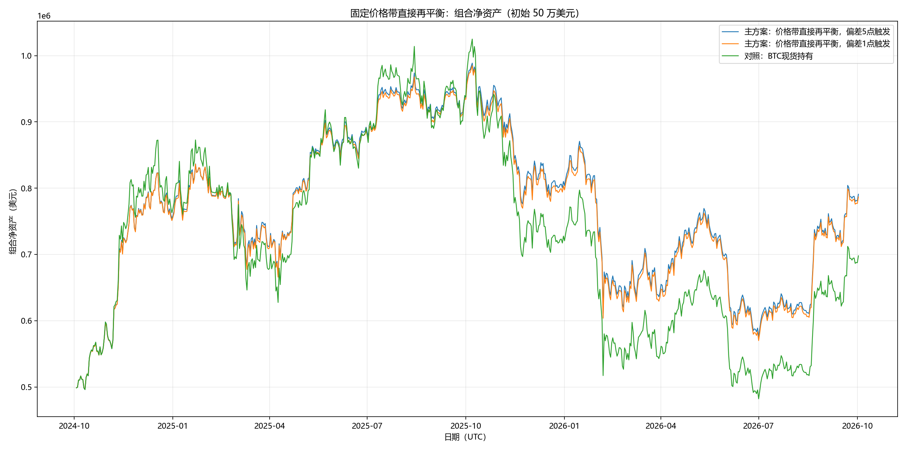

规则：BTC 现货价格 60,000 美元对应 100% 净 BTC 权重， 200,000 美元对应 0%，中间按价格线性映射并截断在 0%–100%。初始 50 万美元全部折算为既有现货 BTC， 现货数量保持不变，不收现货建仓费；随后只用 Bybit USDT 永续合约调整净仓位。
每分钟按仓位相对目标的偏差触发，比较 5 个百分点与 1 个百分点阈值；触发后以 Taker 直接调回目标， 不是网格、不是按价格跌幅触发。初始合约调整和每次再平衡使用 Taker 0.035%，滑点 1bp，合约数量步长 0.001 BTC。 资金费使用历史真实结算记录；基础场景的融资利率为 0。主组仅开空/平空；允许合约净多、手续费翻倍、负 USDT 年息 5%/10% 只作敏感性。
回测区间：2024-10-02–2026-10-02（UTC，主期；子区间各自从 50 万美元重置）。本页面由 build_report.py 读取 results.json、daily/trades/settlements 导出， 成交、资金费和净值详见完整导出；独立核验结果见 audit.json。
目标净 BTC 权重 = clamp((200,000 − BTC 现货价格) / 140,000, 0, 1)。目标权重使用现货价格； 永续标记价用于净资产与持仓标记。现货 BTC 是期初持仓，不在报告中伪造一笔现货买入或现货手续费。
| BTC现货价格（美元） | 目标净BTC权重 |
|---|---|
| $60,000 | 100% |
| $80,000 | 86% |
| $100,000 | 71% |
| $120,000 | 57% |
| $140,000 | 43% |
| $160,000 | 29% |
| $180,000 | 14% |
| $200,000 | 0% |
| 方案 | 场景ID | 区间 | 合约方向 | Taker费率 | 滑点 | 负USDT年息 | 期末净资产 | 累计收益 | 年化收益 | 最大回撤 | 手续费 | 资金费净额 | 负USDT利息 | Taker成交笔数 | 期末净BTC权重 | 期末目标权重 | 短仓目标不可达 | 最大负USDT | 低/高侧触发 |
|---|---|---|---|---|---|---|---|---|---|---|---|---|---|---|---|---|---|---|---|
| 主方案：价格带直接再平衡，偏差5点触发 | two_year_5pp | 2024-10-02–2026-10-02（UTC） | short-only | 0.035% | 1.00 bp | 0.0% | $790,824.48 | 58.16% | 25.78% | 42.86% | $1,240.28 | $20,776.21 | $0.00 | 86 | 83.22% | 82.23% | 4,624.4 小时 | $8,691.85 | 5.00/5.00 点 |
| 主方案：价格带直接再平衡，偏差1点触发 | two_year_1pp | 2024-10-02–2026-10-02（UTC） | short-only | 0.035% | 1.00 bp | 0.0% | $786,643.44 | 57.33% | 25.45% | 43.18% | $5,773.71 | $21,211.73 | $0.00 | 1898 | 82.11% | 82.23% | 4,278.2 小时 | $30,731.96 | 1.00/1.00 点 |
| 对照：BTC现货持有 | two_year_hold | 2024-10-02–2026-10-02（UTC） | short-only | 0.035% | 1.00 bp | 0.0% | $697,892.91 | 39.58% | 18.16% | 54.20% | $0.00 | $0.00 | $0.00 | 0 | 100.00% | 82.23% | 0.0 小时 | $0.00 | 5.00/5.00 点 |

净资产图实际绘制的场景：two_year_5pp, two_year_1pp, two_year_hold。最大回撤来自导出结果；若引擎以分钟 OHLC 路径估计， 它是保守的小时/分钟路径上界，不是逐笔 tick 精确回撤。
| 场景 | 场景ID | 区间 | 期末净资产 | 区间收益 | 年化收益 | 最大回撤 | 手续费 | 资金费净额 | Taker成交笔数 |
|---|---|---|---|---|---|---|---|---|---|
| 价格带直接再平衡，偏差5点触发 | year1_5pp | 2024-10-02–2025-10-02（UTC） | $959,758.47 | 91.95% | 92.04% | 23.72% | $832.23 | $18,141.59 | 60 |
| 价格带直接再平衡，偏差1点触发 | year1_1pp | 2024-10-02–2025-10-02（UTC） | $956,294.60 | 91.26% | 91.34% | 23.74% | $3,935.91 | $18,487.34 | 1320 |
| 价格带直接再平衡，偏差5点触发 | year2_5pp | 2025-10-02–2026-10-02（UTC） | $411,844.79 | -17.63% | -17.64% | 42.59% | $285.03 | $1,279.41 | 27 |
| 价格带直接再平衡，偏差1点触发 | year2_1pp | 2025-10-02–2026-10-02（UTC） | $409,995.70 | -18.00% | -18.01% | 42.97% | $983.22 | $1,299.02 | 540 |
year1/year2 场景各自以 50 万美元和期初现货折算重新开始，不能把第二段的期末资产当作第一段的复利本金。 若主代理未提供独立年度结果，页面只会从两年日终曲线标注“估算”，不会冒充独立回测。
| 方案 | 场景ID | 区间 | 合约方向 | Taker费率 | 滑点 | 负USDT年息 | 期末净资产 | 累计收益 | 年化收益 | 最大回撤 | 手续费 | 资金费净额 | 负USDT利息 | Taker成交笔数 | 期末净BTC权重 | 期末目标权重 | 短仓目标不可达 | 最大负USDT | 低/高侧触发 |
|---|---|---|---|---|---|---|---|---|---|---|---|---|---|---|---|---|---|---|---|
| 手续费×2敏感性，偏差5点触发 | two_year_5pp_fee2 | 2024-10-02–2026-10-02（UTC） | short-only | 0.070% | 1.00 bp | 0.0% | $789,539.89 | 57.91% | 25.68% | 42.93% | $2,487.84 | $20,810.19 | $0.00 | 86 | 83.31% | 82.23% | 4,556.5 小时 | $9,010.07 | 5.00/5.00 点 |
| 手续费×2敏感性，偏差1点触发 | two_year_1pp_fee2 | 2024-10-02–2026-10-02（UTC） | short-only | 0.070% | 1.00 bp | 0.0% | $783,407.49 | 56.68% | 25.19% | 43.27% | $11,704.28 | $21,322.92 | $0.00 | 1930 | 82.59% | 82.23% | 4,067.3 小时 | $31,811.29 | 1.00/1.00 点 |
| 负USDT年息5%敏感性，偏差5点触发 | two_year_5pp_borrow5 | 2024-10-02–2026-10-02（UTC） | short-only | 0.035% | 1.00 bp | 5.0% | $790,637.06 | 58.13% | 25.77% | 42.88% | $1,244.77 | $20,784.84 | $70.31 | 86 | 83.22% | 82.23% | 4,615.1 小时 | $8,743.87 | 5.00/5.00 点 |
| 负USDT年息10%敏感性，偏差5点触发 | two_year_5pp_borrow10 | 2024-10-02–2026-10-02（UTC） | short-only | 0.035% | 1.00 bp | 10.0% | $790,625.05 | 58.13% | 25.77% | 42.87% | $1,239.70 | $20,781.18 | $141.36 | 86 | 83.22% | 82.23% | 4,614.6 小时 | $8,794.58 | 5.00/5.00 点 |
| 负USDT年息5%敏感性，偏差1点触发 | two_year_1pp_borrow5 | 2024-10-02–2026-10-02（UTC） | short-only | 0.035% | 1.00 bp | 5.0% | $787,022.39 | 57.40% | 25.48% | 43.13% | $5,825.76 | $21,225.53 | $378.34 | 1914 | 82.11% | 82.23% | 4,304.7 小时 | $31,124.29 | 1.00/1.00 点 |
| 负USDT年息10%敏感性，偏差1点触发 | two_year_1pp_borrow10 | 2024-10-02–2026-10-02（UTC） | short-only | 0.035% | 1.00 bp | 10.0% | $787,135.56 | 57.43% | 25.49% | 43.14% | $5,837.69 | $21,215.85 | $738.79 | 1914 | 82.11% | 82.23% | 4,312.3 小时 | $31,247.88 | 1.00/1.00 点 |
| 允许合约净多对照，偏差5点触发 | two_year_5pp_allow_long | 2024-10-02–2026-10-02（UTC） | 允许净多 | 0.035% | 1.00 bp | 0.0% | $808,014.70 | 61.60% | 27.14% | 43.21% | $1,364.18 | $20,099.84 | $0.00 | 96 | 83.17% | 82.23% | 0.0 小时 | $8,691.85 | 5.00/5.00 点 |
| 允许合约净多对照，偏差1点触发 | two_year_1pp_allow_long | 2024-10-02–2026-10-02（UTC） | 允许净多 | 0.035% | 1.00 bp | 0.0% | $807,816.53 | 61.56% | 27.13% | 43.27% | $6,449.42 | $20,458.01 | $0.00 | 2165 | 82.11% | 82.23% | 0.0 小时 | $30,731.96 | 1.00/1.00 点 |
allow_perp_long 只用于检验 short-only 的目标不可达约束；fee2、borrow5、borrow10 分别改变费用或负 USDT 利息假设。 这些结果不改变主方案定义，也不表示账户已经获得借款或允许净多。
| scenario | 场景ID | 初始Taker笔数 | 再平衡Taker笔数 | Taker手续费 | 其中初始合约调整费 | 资金费结算次数 | 资金费净额 | 借款利息结算次数 | 借款利息现金影响 | 期初现货BTC | 期末现货BTC | 现货数量最大变动 |
|---|---|---|---|---|---|---|---|---|---|---|---|---|
| 主方案：价格带直接再平衡，偏差5点触发 | two_year_5pp | 1 | 85 | $1,240.28 | $1.00 | 2189 | $20,776.21 | 0 | $-0.00 | 8.222 BTC | 8.222 BTC | 0.000 BTC |
| 主方案：价格带直接再平衡，偏差1点触发 | two_year_1pp | 1 | 1897 | $5,773.71 | $1.00 | 2189 | $21,211.73 | 0 | $-0.00 | 8.222 BTC | 8.222 BTC | 0.000 BTC |
| 对照：BTC现货持有 | two_year_hold | 0 | 0 | $0.00 | $0.00 | 2189 | $0.00 | 0 | $-0.00 | 8.222 BTC | 8.222 BTC | 0.000 BTC |
| 价格带直接再平衡，偏差5点触发 | year1_5pp | 1 | 59 | $832.23 | $1.00 | 1094 | $18,141.59 | 0 | $-0.00 | 8.222 BTC | 8.222 BTC | 0.000 BTC |
| 价格带直接再平衡，偏差1点触发 | year1_1pp | 1 | 1319 | $3,935.91 | $1.00 | 1094 | $18,487.34 | 0 | $-0.00 | 8.222 BTC | 8.222 BTC | 0.000 BTC |
| 价格带直接再平衡，偏差5点触发 | year2_5pp | 1 | 26 | $285.03 | $73.23 | 1094 | $1,279.41 | 0 | $-0.00 | 4.216 BTC | 4.216 BTC | 0.000 BTC |
| 价格带直接再平衡，偏差1点触发 | year2_1pp | 1 | 539 | $983.22 | $73.23 | 1094 | $1,299.02 | 0 | $-0.00 | 4.216 BTC | 4.216 BTC | 0.000 BTC |
| 手续费×2敏感性，偏差5点触发 | two_year_5pp_fee2 | 1 | 85 | $2,487.84 | $2.00 | 2189 | $20,810.19 | 0 | $-0.00 | 8.222 BTC | 8.222 BTC | 0.000 BTC |
| 手续费×2敏感性，偏差1点触发 | two_year_1pp_fee2 | 1 | 1929 | $11,704.28 | $2.00 | 2189 | $21,322.92 | 0 | $-0.00 | 8.222 BTC | 8.222 BTC | 0.000 BTC |
| 负USDT年息5%敏感性，偏差5点触发 | two_year_5pp_borrow5 | 1 | 85 | $1,244.77 | $1.00 | 2189 | $20,784.84 | 2224 | $-70.31 | 8.222 BTC | 8.222 BTC | 0.000 BTC |
| 负USDT年息10%敏感性，偏差5点触发 | two_year_5pp_borrow10 | 1 | 85 | $1,239.70 | $1.00 | 2189 | $20,781.18 | 2224 | $-141.36 | 8.222 BTC | 8.222 BTC | 0.000 BTC |
| 负USDT年息5%敏感性，偏差1点触发 | two_year_1pp_borrow5 | 1 | 1913 | $5,825.76 | $1.00 | 2189 | $21,225.53 | 4981 | $-378.34 | 8.222 BTC | 8.222 BTC | 0.000 BTC |
| 负USDT年息10%敏感性，偏差1点触发 | two_year_1pp_borrow10 | 1 | 1913 | $5,837.69 | $1.00 | 2189 | $21,215.85 | 4960 | $-738.79 | 8.222 BTC | 8.222 BTC | 0.000 BTC |
| 允许合约净多对照，偏差5点触发 | two_year_5pp_allow_long | 1 | 95 | $1,364.18 | $1.00 | 2189 | $20,099.84 | 0 | $-0.00 | 8.222 BTC | 8.222 BTC | 0.000 BTC |
| 允许合约净多对照，偏差1点触发 | two_year_1pp_allow_long | 1 | 2164 | $6,449.42 | $1.00 | 2189 | $20,458.01 | 0 | $-0.00 | 8.222 BTC | 8.222 BTC | 0.000 BTC |
初始现货不计建仓手续费；初始合约调仓计入 Taker 费。手续费、资金费和借款利息已经进入各场景净资产， 不能再把它们重复加到收益。成交次数按 Taker 成交记录或结果字段展示；资金费结算次数来自 settlements.csv（如已导出）。 现货数量起末值及最大变动用于检查“保留原 BTC 数量”约束。
审计与来源：results.json · audit.json · source_manifest.json。
| 字段 | 值 |
|---|---|
| minute_rows | 1051200 |
| funding_rows | 2190 |
| audit.passed | True |
| audit.scenarios | 15 条 |
| audit.export_replay | 15 条 |